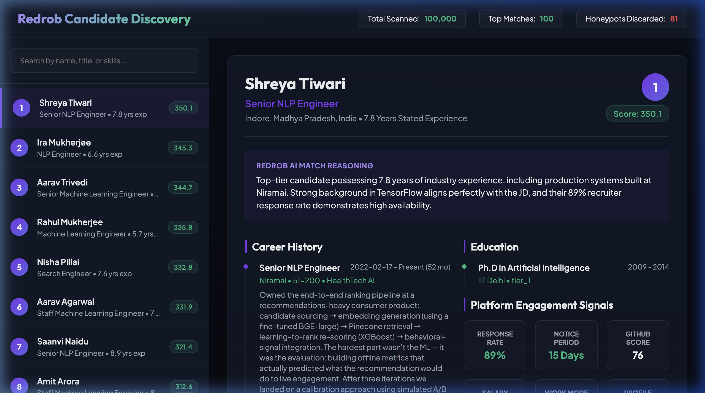
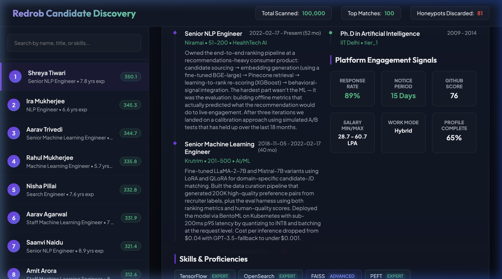

Track 1: The AI Systems Architect: Reimagining Work
Saurabh Kumar Bajpai • saurabhbajpai03@outlook.com
Fragile deployments, slow developer onboarding, and high ATS processing noise result in massive resource drains for scaling enterprises.
Shifts developer responsibilities from manual coding and debug loops to high-leverage architectural orchestration.


Agent coordinating system actions
Compiles code & runs test suites
Verifies UI & accessibility
Auto-publishes clean branch
Designed to meet the compute environment restrictions of Stage 3 and provide unique, non-templated candidate match reasonings for Stage 4 manual reviews.
Days 1-30: Establish core docker sandboxing and compiler integration.
Days 31-60: Pilot Chrome DevTools protocol UI verification with internal developers.
Days 61-90: Launch v1.0 open-source VS Code MCP server extension.